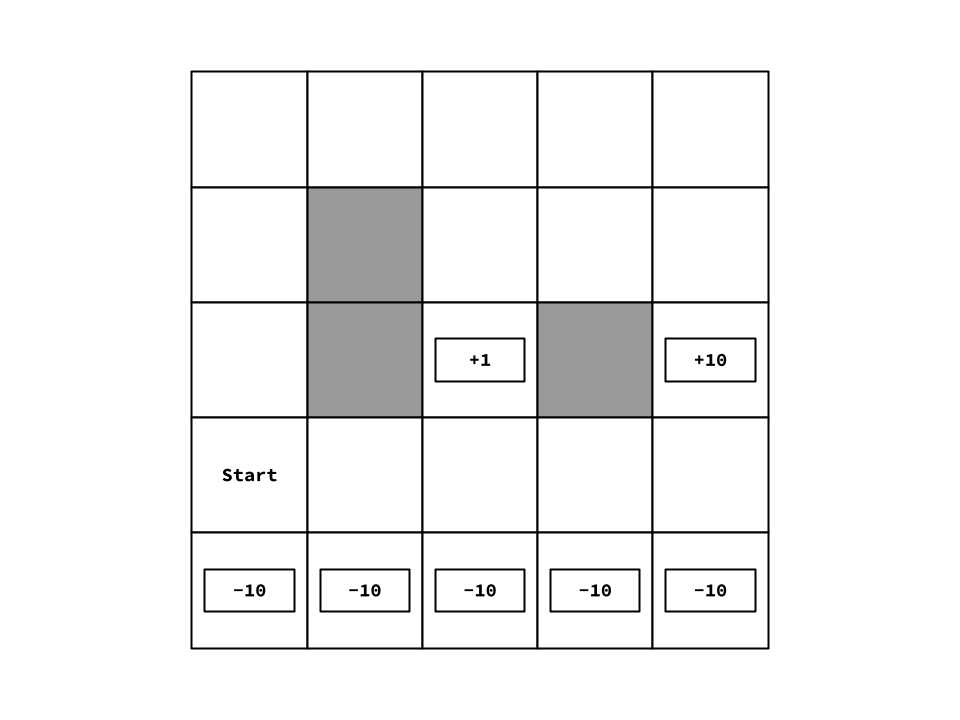

The goal of this problem set is to implement and get familiar with Reinforcement Learning.
To run the autograder, type the following command in the terminal:
python autograder.py
If you wish to run a certain problem only (e.g. problem 1), type:
python autograder.py -q 1
where 1 is the number of the problem you wish to run.
You can also specify a single testcase only (e.g. testcase01.json in problem 1) by typing:
python autograder.py -q 1/testcase01.json
To debug your code through the autograder, you should disable the timeout functionality. This can be done via the debug flag as follow:
python autograder.py -d -q 1/testcase01.json
Or you could set a time scale to increase or decrease your time limit. For example, to half your time limits, type:
python autograder.py -t 0.5 -q 1/testcase01.json
Note: Your machine may be faster or slower than the grading device. To automatically detect your machine's speed, the autograder will run speed_test.py to measure your machine's relative speed, then it will scale the time limits automatically. The speed test result is automatically stored in time_config.json to avoid running the speed test every time you run the autograder. If you want to re-calculate your machine's speed, you can do so by either running speed_test.py, or deleting time_config.json followed by running the autograder.
In the attached python files, you will find locations marked with:
#TODO: ADD YOUR CODE HERE
utils.NotImplemented()
Remove the utils.NotImplemented() call and write your solution to the problem. DO NOT MODIFY ANY OTHER CODE; The grading of the assignment will be automated and any code written outside the assigned locations will not be included during the grading process.
IMPORTANT: In this problem set, you must document your code (explain the algorithm you are implementing in your own words within the code) to get the full grade. Undocumented code will be penalized. Imagine that you are in a discussion, and that your documentation are answers to all the questions that you could be asked about your implementation (e.g. why choose something as a data structure, what purpose does conditions on if, while and for blocks serve, etc.).
IMPORTANT: For this assignment, you can only use the Built-in Python Modules. Do not use external libraries such as Numpy, Scipy, etc. You can check if a module is builtin or not by looking up The Python Standard Library page.
There are 5 files that you can run from the terminal:
play_grid.py: where you can play a grid or let an agent play it. This is useful for debugging.train_grid.py: where you can train a solver to play a grid. This is useful for debugging.play_snake.py: where you can play a snake game or let a random agent play it. This is useful for debugging.autograder.py: where you test your code and get feedback about your results for the test cases.speed_test.py: where you can check your computer's speed, which is useful to predict how long your code will take to run on the grading machine.These are the files relevant to the requirements:
mathutils.py [IMPORTANT]: This contains some useful math utilities. You should understand how to use the classes and functions written in it.mdp.py [IMPORTANT]: This is where the generic MDP (Markov Decision Process) is defined. You should understand the code written in it.environment.py [IMPORTANT]: This is where the generic environment is defined. It wraps an MDP and simulates episodes. This is used to train and run RL agents. You should understand the code written in it.grid.py: This is where the grid MDP and environment are defined.snake.py [IMPORTANT + REQUIREMENT]: This is where the snake environment is defined. You should complete the code in this file.base_rl.py [IMPORTANT]: This defines some base classes and definitions needed by other RL code, including the base class for the feature extractor. You should understand the code written in it.features_grid.py: This is where the features, needed to create the Approximate Q-Learning agent for the grid environment, are defined.agents.py [IMPORTANT]: This is where game agents are defined. You should understand the code written in it.value_iteration.py [IMPORTANT + REQUIREMENT]: This is where the value iteration agent is defined. You should complete the code in this file.options.py [IMPORTANT + REQUIREMENT]: This is where the functions for problem 2 are defined. You should complete the code in this file. You must document your code well, specially in this part.reinforcement_learning.py [IMPORTANT + REQUIREMENT]: This is where the RL agents (SARSA, Q & Approximate Q) are defined. You should complete the code in this file.training_loops.py [IMPORTANT]: This is where the training loops for the RL agents are defined. It is recommended that you understand it.There are some files defined in the folder helpers that are used for testing. You should not need to understand how to use them, but it won't harm to know the following information about them:
globals.py: This only contains some imports that should be seen by all the testing code, so they are defined here to be imported in autograder.py.mt19937.py: This is a pseudo-random number generator. We define our own instead of using the builtin random module to ensure that the results are reproduceable regardless of the Python version.rl_utils.py: This contains some utility functions to compare and print the results onto the console.test_tools.py: This is where most of the testing code lies. It has pairs of functions run_* and compare_* to run and check the results of different functions in the requirements. It is relatively complex, and error messages may point you towards this file, if your code returns something wrong that also leads the testing code to crash.utils.py: This contains some classes and functions that are used by autograder.py and test_tools.py. This is where the load_function lies which is used to dynamically load your solutions from their python files at runtime without using import. This ensures that having an error in one file does not stop the autograder from grading the other files.There are two environments in this problem set:
U, D, L, R). The actions are noisy, so the end result may be moving along one of the 2 directions orthogonal to the desired direction. Some locations "#" are occupied with walls, so the player cannot stand on them. Some other locations "T" are terminal states which ends the episode as soon as the player stands on them. Each location has an associated reward which is given to the player if they do an action that gets them to be in that state in the next time step. The Markov decision process and environment of the grid world is implemented in grid.py and the environment instances are included in the grids folder.You can play a grid world game by running:
# For playing a grid (e.g. grid1.json)
python play_grid.py grids\grid1.json
You can also let a learning agent play the game in your place (e.g. a Q-Learning Agent) as follows:
python play_grid.py grids\grid1.json -a q_learning -m models/model.json
NOTE: In addition to the agent, we supply a model file from which the agent will read its data (e.g. Q-values for Q-learing & SARSA agents, weights for approximate Q-learning and Utilities for value iteration agents). If we don't supply a model file, the agent will play using the initial values of their learnable parameters.
To train an agent and save its data in model file, use train.py as follows:
# For training a q_learning agent on grid1.json for 1000 iterations where each episode is limited to 100 steps only
python train_grid.py q_learning grids\grid1.json models/model.json -i 1000 -sl 100
The agent options are:
human where the human play via the consolerandom where the computer plays randomlyvalue_iteration where the agent uses the learned utilities (via value iteration) and the MDP to decide the action to take.sarsa where the agent uses the learned Q-value (via SARSA) to decide the action to take.q_learning where the agent uses the learned Q-value (via Q-Learning) to decide the action to take.q_learning_approx where the agent uses the learned weights (via Linear Approximate Q-Learning) to decide the action to take.To get detailed help messages, run play_grid.py and train_grid.py with the -h flag.
U, D, L, R). Initially, the snake has a length of 1 (occupies one cell only), is located at the center of the map and is moving LEFT. If the head enters a cell containing an apple, it eats the apple, its length increase by 1, and it gets a reward of 1. If the snake head exits the level area, it wraps around and enters the level from the other side (e.g., if it exits the level from the top, it enters the level from bottom). If the snake bites itself (the head enters a cell occupied by its own body), it loses and gets a reward of -100. The possible actions are NONE, where the snake keeps moving in its current direction, and the two directions orthogonal to its current direction, in which case the snake changes its direction and starts moving in that new direction starting from the current time step. For the snake game, we do not define a Markov decision process, since the number of states are huge, and it would be impractical to list all of them. Instead, we define an environment only which is defined in snake.py, but it is incomplete, and you need to finish some TODOs to get it working.You can try to play snake here: https://www.googlesnake.com/ The only difference between google snake and our implementation is that the snake wraps around the level instead of dying when it hits a wall.
After you finish, the snake environment requirement, you can play a snake game by running:
# For playing a 5x5 snake game
python play_snake.py 5 5
You can also let a random agent play the game in your place as follows:
python play_snake.py 5 5 -a random
NOTE: Currently, there is no training script or feature extractor for the snake game, so RL agents are not supported.
To get detailed help messages, run play_snake.py with the -h flag.
This problem set relies a lot on randomness and Reinforcement Learning usually does not converge to the same results when different random seeds are used. So it is essential to follow the instructions written in the comments around the TODOs to acheive the same results. In addition, while acting, if two actions have the same value (Q-value, expected utilities, etc.), pick the action that appears first in the list returned by mdp.get_actions or env.actions().
Inside value_iteration.py, modify the functions marked by a **TODO** to complete the ValueIterationAgent class. Note that the Reward R(s, a, s') is a function of the current state, the action and the next state, so use the appropriate version of the bellman equation:
$$U(s) = \max_{a} \sum_{s'} P(s'|s,a) [ R(s,a,s') + \gamma U(s')]$$
WARNING: The problem will run your solution for value iteration problem. So please make sure that your value iteration code is correct before proceeding to this problem.

As shown in figure above, this MDP has 2 terminal states with positive rewards (one is close to the start with a reward of +1 and far from the start with a reward of +10). To reach any of these 2 states, the agent can either take a short yet dangerous path (going directly right) or take a long yet safe path (going up, then right, then down). The shorter path is dangerous since it extends alongside a row of terminal states with a penalty of -10 each.
The goal of this question is to select values for these 3 parameters (action noise, discount factor and living reward) to control the policy.
In the file options.py, there are 6 functions question2_1 to question2_6 where each of them returns a dictionary containing the 3 parameters described above. The goal is to select values for there parameters such that the policy behaves as follows:
question2_1, we want the policy to seek the near terminal state (reward +1) via the short dangerous path (moving besides the row of -10 state).question2_2, we want the policy to seek the near terminal state (reward +1) via the long safe path (moving away from the row of -10 state).question2_3, we want the policy to seek the far terminal state (reward +10) via the short dangerous path (moving besides the row of -10 state).question2_4, we want the policy to seek the far terminal state (reward +10) via the long safe path (moving away from the row of -10 state).question2_5, we want the policy to avoid any terminal state and keep the episode going on forever.question2_6, we want the policy to seek any terminal state (even ones with the -10 penalty) and try to end the episode in the shortest time possible.Inside reinforcement_learning.py, modify the functions marked by a **TODO** to complete the SARSALearningAgent class.
$$Q(s,a) \leftarrow Q(s,a) + \alpha(r + \gamma Q(s',a') - Q(s,a))$$
Inside reinforcement_learning.py, modify the functions marked by a **TODO** to complete the QLearningAgent class.
$$Q(s,a) \leftarrow Q(s,a) + \alpha(r + \gamma \max_{a'}Q(s',a') - Q(s,a))$$
Inside reinforcement_learning.py, modify the functions marked by a **TODO** to complete the ApproximateQLearningAgent class.
$$w_{ia} \leftarrow w_{ia} + \alpha(r + \gamma \max_{a'}Q(s',a') - Q(s,a))w_i$$
where $w_{ia}$ is the the weight of the feature $x_i$ in $Q(s,a)$ and ${x_1, x_2, ..., x_n}$ are the features of the state $s$. Thus the approximate Q-function can be written as follows:
$$Q(s,a) = \sum_i w_{ia}*x_i$$
Inside snake.py, modify the functions marked by a **TODO** to complete the SnakeEnv class.
IMPORTANT: You must fill the student_info.json file since it will be used to identify you as the owner of this work. The most important field is the id which will be used by the automatic grader to identify you. You also must compress the solved python files and the student_info.json file together in a zip archive so that the autograder can associate your solution files with the correct student_info.json file. The failure to abide with the these requirements will lead to a zero since your submission will not be graded.
For this assignment, you should submit the following files only:
student_info.jsonvalue_iteration.pyoptions.pyreinforcement_learning.pysnake.pyPut these files in a compressed zip file named solution.zip which you should submit to Google Classroom.
The delivery deadline is Sunday December 15th 2024 23:59. It should be delivered on Google Classroom. This is an individual assignment. The delivered code should be solely written by the student who delivered it. Any evidence of plagiarism will lead to receiving zero points.